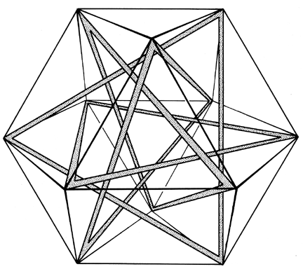

|  |
| Fig. 1033.019 Circuit Pattern Tensegrity: In Anthony Pugh's model 12 struts form four interlocking but nontouching triangular circuits. The plane of each triangle of struts bisects the vector equilibrium which its vertexes define. Each triangle of struts is inscribed within a hexagonal circuit of tensors. |